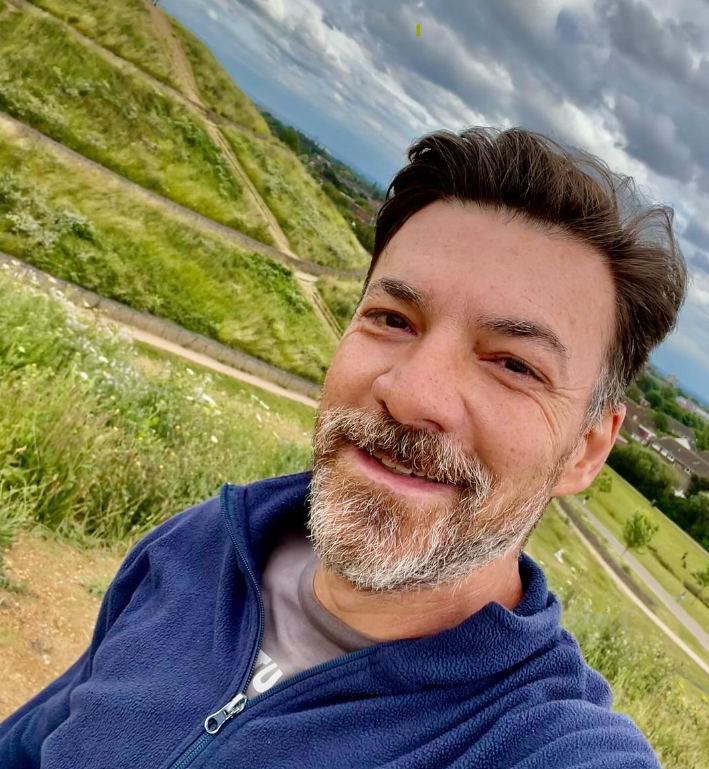

Estudando com a Alura - (ONE) Oracle Next Education para me tornar um Front-end de qualidade!
Olá! Sou Homero, estou estudando programação e pretendo ser desenvolvedor Front-end. Esta página é apenas o início de um portifólio. Por enquanto, estou usando apenas HTML e CSS mas, em breve, passará a incorporar funcionalidades com Javascript.
